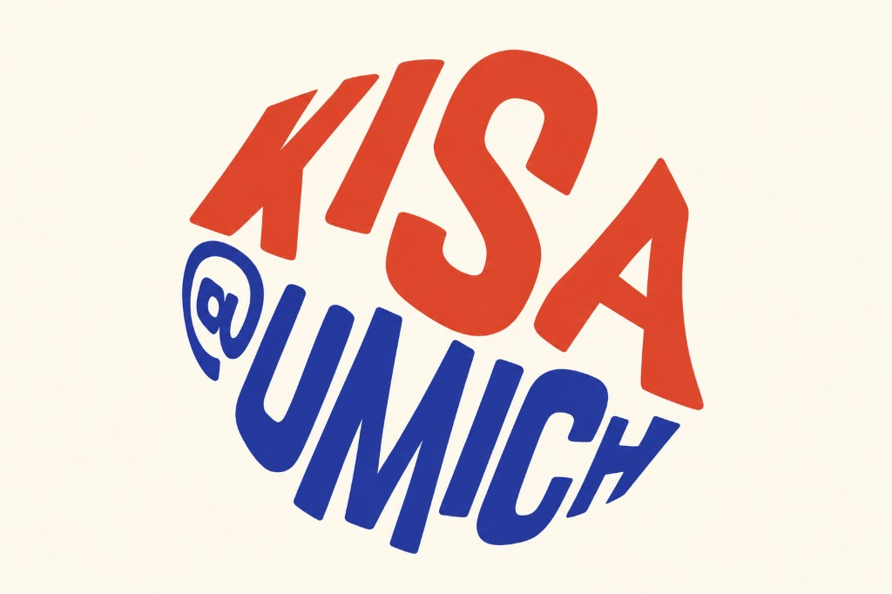
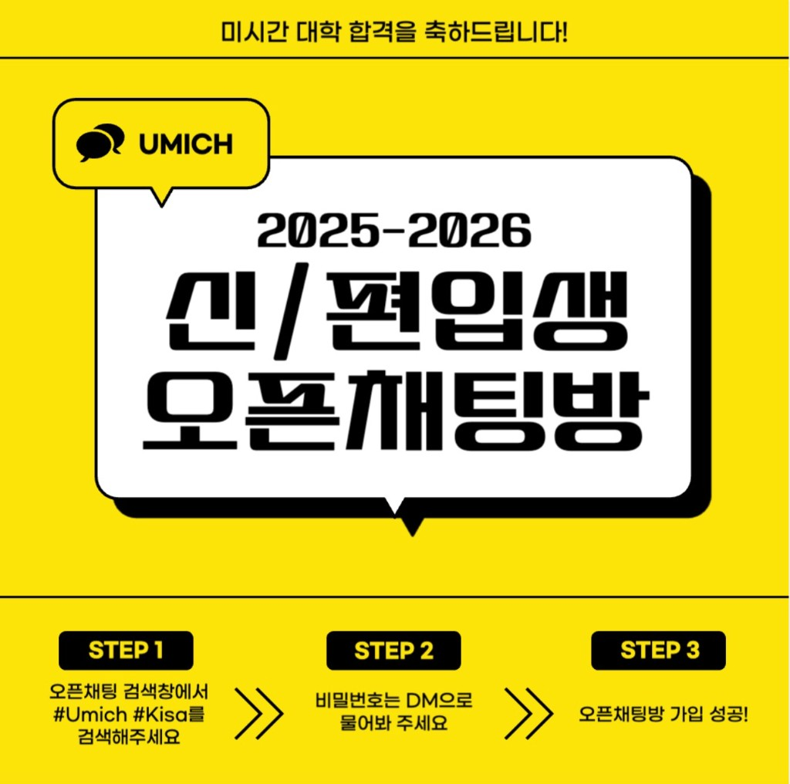

Case study
Korean International Student Association
KISA (Korean International Student Association)

Context
At the Korean International Student Association (KISA) at the University of Michigan, I worked with a community of Korean international students. Public-facing communication and live events were central to how the group stayed connected on campus.
What I worked on
I served as PR leader and event coordinator. That meant leading how the association communicated outwardly and coordinating events that brought members together.
Event coordination
Programs I helped bring to campus as event coordinator, alongside KISA leadership and partner orgs.
My work on each program
- Outreach and communication with partners, speakers, and campus contacts
- Marketing the event through KISA channels and promotional assets
- Organizing venue and room reservations on campus
- On-site operations for the full run of the program
What I took away
Holding both PR and events pushed me to keep one voice across announcements and in-person experiences. What you say before an event and how it feels when people show up should line up.
SNS Operation
Saved posts from KISA’s social channels during my PR leadership.
